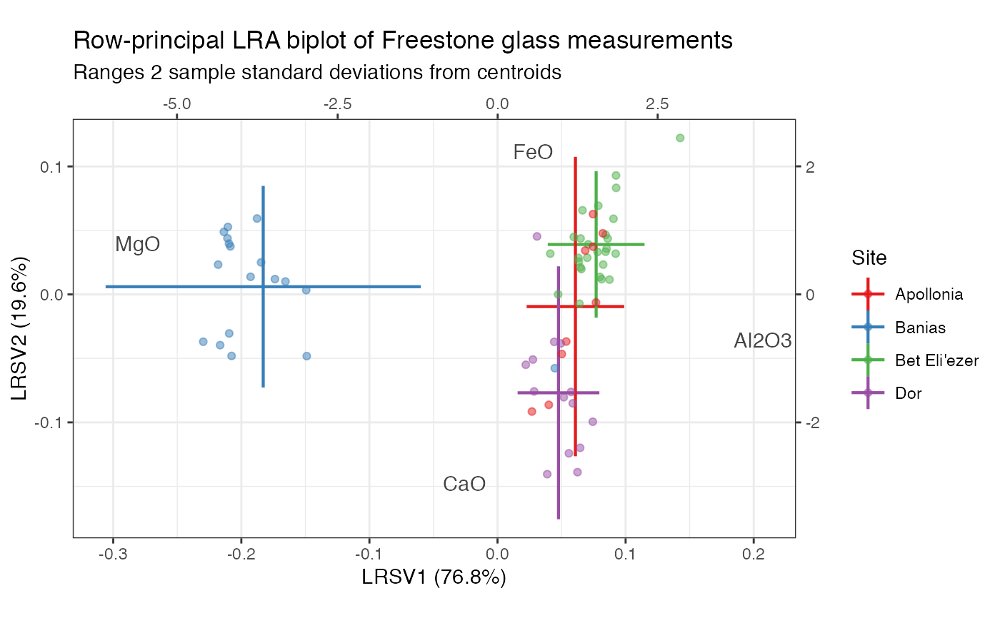
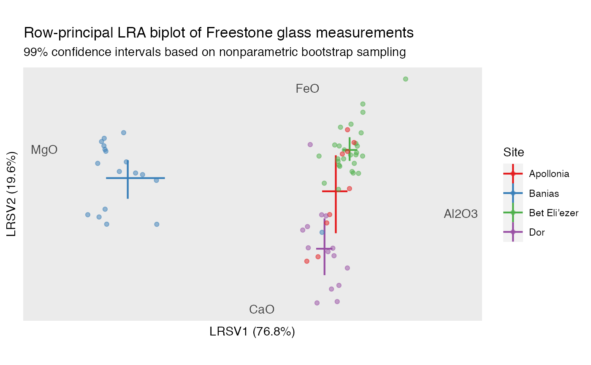

geom_lineranges.Rdgeom_lineranges() renders horizontal and vertical intervals
for a specified subject or variable; geom_pointranges() additionally
renders a point at their crosshairs.
geom_lineranges(
mapping = NULL,
data = NULL,
stat = "center",
position = "identity",
...,
na.rm = FALSE,
show.legend = NA,
inherit.aes = TRUE
)
geom_pointranges(
mapping = NULL,
data = NULL,
stat = "center",
position = "identity",
...,
na.rm = FALSE,
show.legend = NA,
inherit.aes = TRUE
)Set of aesthetic mappings created by aes() or
aes_(). If specified and inherit.aes = TRUE (the
default), it is combined with the default mapping at the top level of the
plot. You must supply mapping if there is no plot mapping.
The data to be displayed in this layer. There are three options:
If NULL, the default, the data is inherited from the plot
data as specified in the call to ggplot().
A data.frame, or other object, will override the plot
data. All objects will be fortified to produce a data frame. See
fortify() for which variables will be created.
A function will be called with a single argument,
the plot data. The return value must be a data.frame, and
will be used as the layer data. A function can be created
from a formula (e.g. ~ head(.x, 10)).
The statistical transformation to use on the data for this layer, as a string.
Position adjustment, either as a string, or the result of a call to a position adjustment function.
Additional arguments passed to ggplot2::layer().
Passed to ggplot2::layer().
logical. Should this layer be included in the legends?
NA, the default, includes if any aesthetics are mapped.
FALSE never includes, and TRUE always includes.
It can also be a named logical vector to finely select the aesthetics to
display.
If FALSE, overrides the default aesthetics,
rather than combining with them. This is most useful for helper functions
that define both data and aesthetics and shouldn't inherit behaviour from
the default plot specification, e.g. borders().
ggbiplot() uses ggplot2::fortify() internally to produce a single data
frame with a .matrix column distinguishing the subjects ("rows") and
variables ("cols"). The stat layers stat_rows() and stat_cols() simply
filter the data frame to one of these two.
The geom layers geom_rows_*() and geom_cols_*() call the corresponding
stat in order to render plot elements for the corresponding factor matrix.
geom_dims_*() selects a default matrix based on common practice, e.g.
points for rows and arrows for columns.
geom_lineranges() and geom_pointranges() understand the following
aesthetics (required aesthetics are in bold):
x
xmin
xmax
y
ymin
ymax`
alpha
colour
linetype
size
group
Other geom layers:
geom_axis(),
geom_isoline(),
geom_origin(),
geom_text_radiate(),
geom_unit_circle(),
geom_vector()
# compute log-ratio analysis of Freestone primary class composition measurements
glass %>%
ordinate(cols = c(SiO2, Al2O3, CaO, FeO, MgO),
model = lra, compositional = TRUE) %>%
confer_inertia("rows") %>%
print() -> glass_lra
#> # A tbl_ord of class 'lra': (68 x 4) x (5 x 4)'
#> # 4 coordinates: LRSV1, LRSV2, ..., LRSV4
#> #
#> # Rows (principal): [ 68 x 4 | 11 ]
#> LRSV1 LRSV2 LRSV3 ... | Site Anal Context Form TiO2
#> | <chr> <chr> <chr> <chr> <dbl>
#> 1 0.0925 0.0929 0.0156 | 1 Bet Eli… 1 L14.B1… Chunk NA
#> 2 0.0905 0.0591 -0.0439 ... | 2 Bet Eli… 2 L14.B1… Chunk 0.16
#> 3 0.0844 0.0333 -0.000492 | 3 Bet Eli… 3 L14.B1… Chunk 0.13
#> 4 0.0647 0.0211 0.0267 | 4 Bet Eli… 4 L14.B1… Chunk NA
#> 5 0.0635 0.0257 0.0239 | 5 Bet Eli… 5 L14.B1… Chunk NA
#> # … with 63 more rows, and 6 more
#> # variables: MnO <dbl>,
#> # Na2O <dbl>, K2O <dbl>,
#> # P2O5 <dbl>, Cl <dbl>, SO3 <dbl>
#> #
#> # Columns (standard): [ 5 x 4 | 1 ]
#> LRSV1 LRSV2 LRSV3 ... | .name
#> | <chr>
#> 1 -0.00548 0.338 0.237 | 1 SiO2
#> 2 4.15 -0.714 -2.50 ... | 2 Al2O3
#> 3 -0.517 -2.95 -0.126 | 3 CaO
#> 4 0.553 2.23 -9.57 | 4 FeO
#> 5 -5.61 0.790 -4.47 | 5 MgO
# row-principal biplot with ordinate-wise standard deviations
glass_lra %>%
ggbiplot(aes(color = Site), sec.axes = "cols", scale.factor = .05) +
theme_biplot() +
scale_color_brewer(type = "qual", palette = 6) +
geom_cols_text(stat = "chull", aes(label = .name), color = "#444444") +
geom_rows_lineranges(fun.data = mean_sdl, size = .75) +
geom_rows_point(alpha = .5) +
ggtitle(
"Row-principal LRA biplot of Freestone glass measurements",
"Ranges 2 sample standard deviations from centroids"
)

# row-principal biplot with coordinate-wise confidence intervals
glass_lra %>%
ggbiplot(aes(color = Site), sec.axes = "cols", scale.factor = .05) +
theme_biplot() +
scale_color_brewer(type = "qual", palette = 6) +
geom_cols_text(stat = "chull", aes(label = .name), color = "#444444") +
geom_rows_lineranges(
fun.data = mean_cl_boot, fun.args = list(conf.int = .99),
size = .75
) +
geom_rows_point(alpha = .5) +
ggtitle(
"Row-principal LRA biplot of Freestone glass measurements",
"99% confidence intervals based on nonparametric bootstrap sampling"
)
